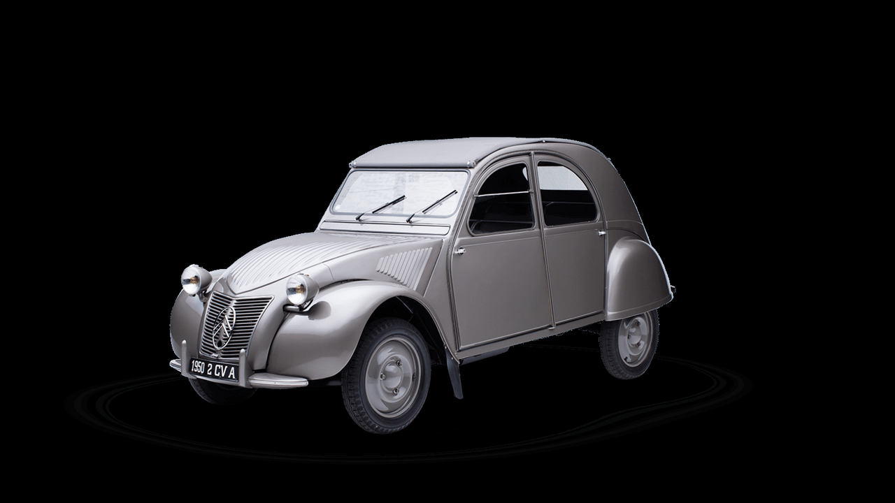
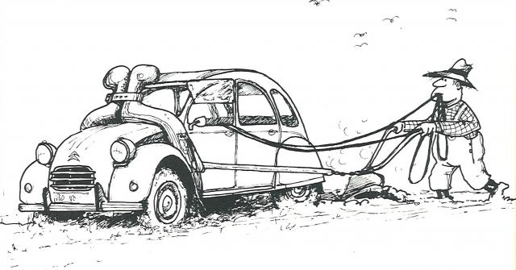

Citroen 2CV
A coluna é “Histórias & Estórias”, por isso começa com uma Estória que conta como nasceu o Citroën 2CV (Deux Chevaux, dois cavalos em francês). Diz a lenda que foi alguém (por coincidência André Citroën), com uma casa de campo no interior da França, ficou cansado de perder parte dos ovos no transporte para sua casa na cidade por causa dos solavancos do veículo de transporte. Além disso, sua esposa não era uma boa motorista. Então, como era dono de uma fábrica de automóveis, pediu ao seu chefe de Engenharia, André Lefebvre, um carro especial.
A seguir, vem a História, que conta como o fundador da marca, André Citroën, pensando em aumentar a oferta de produtos para entrar em novos mercados, solicitou então ao diretor da fábrica, Pierre Jules Boulanger, que incumbisse Lefebvre de criar veículo pequeno – TPV (Toute Petite Voiture, carro pequeno em tudo), um modelo minimalista de classe muito inferior e, consequentemente muito mais barato, que o Traction Avant (projeto de Lefebvre), que já usava carroceria do tipo monobloco. Na sua ideia, ele queria um veículo que transportasse 50 kg de batatas, ou um tonel de vinho de 50 litros, a 60 km/h e fazendo 3-L/100 km (como se exprime até hoje o consumo na Europa e outros países mundo a fora e que equivale ao nosso 33,3 km/l ). O carro também deveria ser leve o suficiente para ser conduzido até mesmo por uma jovem e recém-habilitada motorista.

Protótipo de 1936. Note a manivela para dar partido no motor
E aí vem a história do produtor de ovos. O “Caier de Charge” (caderno do projeto) pedia que ele fosse capaz de transportar, no banco traseiro, uma cesta de ovos, mesmo que trafegando por péssimos caminhos.
Escondendo-o dos alemães
Foram produzidos, até 1939, 200 modelos que seriam expostos para atrair compradores, principalmente do meio rural, que ansiavam por um veículo barato e capaz de grandes proezas no transporte de quatro pessoas ou uma carga, com resistência e conforto (lembre-se da história dos ovos).
Para atender a essas exigências do mercado, o TPV foi projetado para ter, entre outros detalhes construtivos, um chassi e carroceria separados com uma suspensão independente nas quatro rodas por braços empurrados na frente e arrastados atrás, com molas helicoidais funcionando por tração e interligando os braços de um mesmo lado. Os amortecedores eram do tipo massa dentro de um cilindro (batteur), eficazes no controle das oscilações da suspensão excepcionalmente macia, justamente o objetivo do projeto, os ovos não se quebrarem.
E, por fim, ser propulsionado por um pequeno motor boxer bicilindro de 375 cm³ (9 cv) arrefecido a ar com câmbio de quatro marchas e tração dianteira. Isso tudo, nos anos 30. Mas, com a chegada da Segunda Guerra Mundial, havia um receio de que os alemães que ocuparam a França em maio de 1940 tomassem para si aquele projeto tão inovador. Então, 196 deles foram totalmente destruídos. Sobraram apenas quatro, cuidadosamente escondidos.
André Citroën não chegou a ver sua ideia terminada de todo. Acometido de um câncer no estômago, veio a falecer em 3 de julho de 1935, Sua fábrica havia falido em 1934, logo após o lançamento do revolucionário Citroën 7CV/11CV Traction Avant, e foi assumida pela Michelin pneumáticos, que só a venderia em 1976 para a Peugeot S.A,, formando-se a PSA Peugeot Citroën (esta se fundiu com a FCA Fiat Chrysler Automobiles em janeiro de 2021, formando a poderosa Stellantis de hoje).
Guerra terminada
Finda a guerra na Europa em 8 de maio de 1945 (continuaria no Pacífico ate 15 de agosto), o TPV, agora com nome comercial 2CV (assim mesmo, tudo junto) surge no Salão de Paris, três anos depois. Graças às mãos de Flaminio Bertoni, o carro estava bem mais apresentável. Tanto que o 2CV não demorou a virar o “feio bonito” como Jean-Paul Belmondo, o ator francês que contracenou com Brigitte Bardot e outras lindas estrelas da época, fazendo frente a Alain Delon, então considerado o mais lindo ator do cinema mundial.

Cabe explicar que 2 CV era a potência fiscal (puissance fiscale), calculada tomando-se vários parâmetros do veículo,, para fins do imposto anual algo como o nosso IPVA). O Renault Dauphine que tivemos fabricado aqui, por exemplo, tinha potência fiscal de 5 CV e potência do motor, 26 cv.
Com Bertoni, o carrinho, conhecido, em muitos lugares também como ”Fusca francês”, ganhou dois faróis (até então tinha só um) bem como limpador de para-brisa que foi duplicado. Além disso, teve instaladas maçanetas externas nas portas. Isso sem contar um novo painel de instrumentos.
Desde sua apresentação, em 1948, até 1990, quando foi produzido, em sua última “casa”, na cidade de Magualde, em Portugal, foram fabricadas 3.868.634 unidades do 2CV (se somarmos as versões sedã e furgoneta, este número passa dos 5 milhões). Ele também foi produzido em Levallois e Ivri (França) e Vigo (Espanha).
Na Argentina
Mas o 2CV não foi produzido apenas na Europa. Os argentinos, que trouxeram a Copa do Mundo para a AL no domingo último, também trouxeram para a região, entre 1962 e 1980, a produção do modelo francês, com algumas mudanças na sua parte externa, como conta o colecionador e restaurador de carros antigos, Jonathas Russomano (Vintage Garage Service). É preciso registrar que ele foi montado também no Chile e Uruguai.
Antes ser produzido na AL, existiam no Brasil, um número tão pequeno de 2CV — “que era capaz de serem contados nos dedos de uma só mão”… Depois, disso, ele conta que fora muitas as versões que vieram para cá e hoje crê existirem pelo menos 50 unidades por aqui.
Jonathas conta que existem muitas diferenças entre os modelos europeus e os fabricados na nossa região, especialmente no quesito para-choques. Enquanto que os “estrangeiros” tinham o componente bem fino, por aqui eles ganharam um bem maior e largo, com uma espécie de quebra-mato.
O restaurador diz que é impossível encontrar peças dos modelos franceses clássicos, como o 2CV, aqui no Brasil, como acontece com os modelos americanos.
>Ele gosta de lembrar o evento promovido pela Citroën daqui para comemorar os 100 anos da marca (matéria aqui no AE), quando organizou concurso para demonstrar a facilidade de se desmontar e montar um 2CV. Eram equipe mistas, com dois homens e duas mulheres. Os vencedores o desmontaram e montarem em pouco mais de 3 minutos, não chegando a 4.

Para um carro tão popular como o 2CV, charges eram comuns
Gurgel 2CV?
Outro fato ligado à história do carro no Brasil foi o interesse demonstrado pelo “gênio que calculava dormindo” (lembra?), João Augusto Conrado do Amaral Gurgel, que conseguira a autorização para produzir o modelo francês no Brasil. Ele adquiriu dois modelos, desmontou um — conta Jonathas — e tinha o segundo guardado em sua fábrica. Quando foi decretada a falência da Gurgel Veículos em 1996, o carro foi arrematado em um leilão por um cliente da oficina do empresário, que cuida dele até hoje e que tem nas placas as letras DCV (Deux Chevaux).
Gurgel tinha uma chácara em Rio Claro, SP ao lado da fábrica. Mas nunca se soube que ele estaria pretendendo produzir um carro capaz de transportar uma cesta de ovos, sem perder nenhum deles.